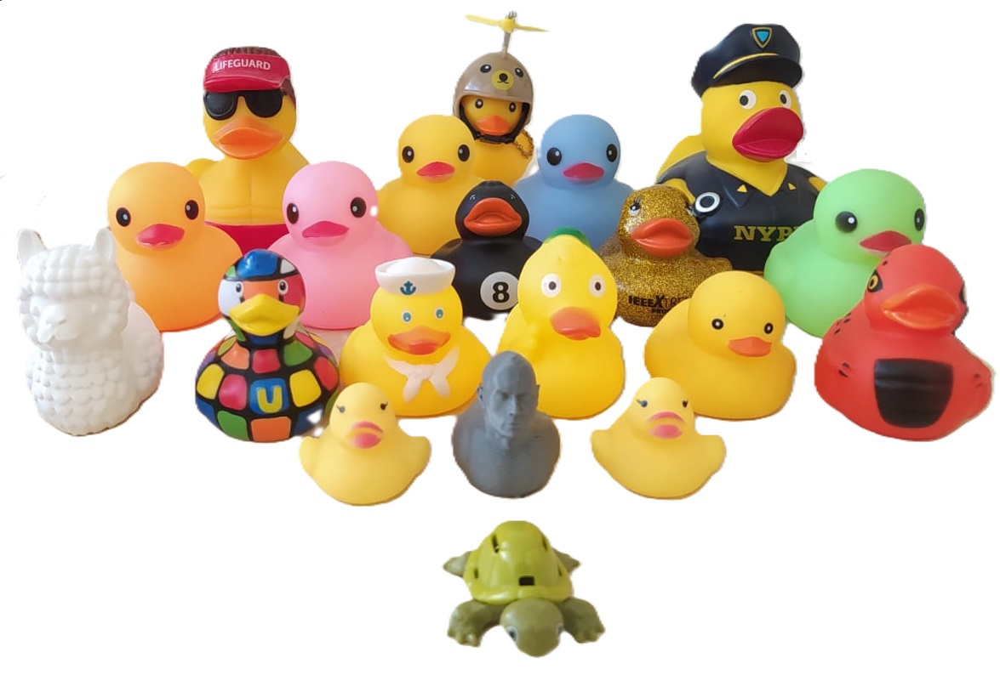

Gabriel Carmona Tabja
gabriel.carmona@phd.unipi.it

Hi! I'm a chilean Ph.D. student in Computer Science at the Università di Pisa. My current research interest
is the design of algorithms and data structures, and data compression. I like to do competitive programming,
I currently coach the teams from the Universidad Técnica Federico Santa María.
Studies
Ph.D. in Computer Science
Università di Pisa
Thesis Advisory Board
Supervisor: Giovanni Manzini, Co-supervisor: Paolo Ferragina
Advisors: Susana Ladra, Alessio Conte
Computer Science Engineering
Universidad Técnica Federico Santa María
Thesis: Implementation of an approximate algorithm for Partioned Elias-Fano ε-optimal
Supervisor: Diego Arroyuelo Billiardi, Co-supervisor: José Luis Martí Lara
Periods Abroad
Danmarks Tekniske Universitet
Host: Philip Bille and Inge Li Gørtz, AlgoLog
Universidade da Coruña
Host: Susana Ladra, LBD
Research
Publications
Engineering Rank/Select Data Structures for Big-Alphabet Strings
Authors: Diego Arroyuelo, Gabriel Carmona, Héctor Larrañaga, Francisco Riveros, Carlos Rojas, Erick Sepúlveda
State: published in
The Computer Journal (
https://doi.org/10.1093/comjnl/bxaf102)
Students
Undergraduate Thesis
Sebastián Torrealba, Universidad Técnica Federico Santa María
Implementación de un tablero de ajedrez de alto rendimiento para la web para plataforma ChessMindAI
Supervisor: Raquel Pezoa, Co-Supervisor: Gabriel Carmona
Johann Vasquez, Universidad Técnica Federico Santa María
Decompresión eficiente de encodings de izquierda a derecha
Supervisor: Roberto Asín, Co-Supervisor: Gabriel Carmona
Teaching Experience
Università di Pisa
Teacher Assistant
- Laboratorio 2
- Programming in C and Python
- Use of programming support tools (Makefile, debugger, etc.)
- Concurrent programming
- Assembly programming exercises
- Java programming exercises
SCCC - OCILabs
Advanced Level Workshop Coordinator
Universidad Técnica Federico Santa María
Teacher
- Data Structures
- Programming Languages
Universidad de Chile
Teacher Assistant
- Design and Implementation of Compilers
Universidad Técnica Federico Santa María
Teacher Assistant
- Algorithm and Complexity
- Data Structures
- Databases
- Programming Languages
- Integral Calculus and Lineal Algebra
Other Activities
Team Competitive Programming UTFSM (since 2022)
Coach
Campamento Invernal de Programación Competitiva (2023, 2024, 2025)
Organizer
Campamento OCI a IOI (2023, 2024, 2025, 2026)
Problemsetter and Tutor
Torneo Chileno de Programación (2024, 2025)
Problemset Organizer
Taller de Verano de Programación Competitiva UTFSM (2024, 2025, 2026)
Organizer
Awards
"Marcos Orrego Puelma" to the best graduate of the Universidad Técnica Federico Santa María in 2022
Academic Distinction "Federico Santa María" to the best graduate of the Computer Science mayor
UTFSM SJ Academic Distinction Software Fair Award
Repositories/Codes/Software